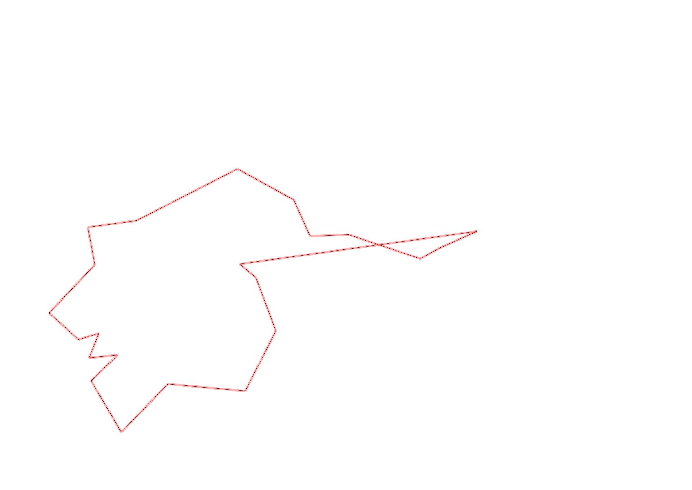
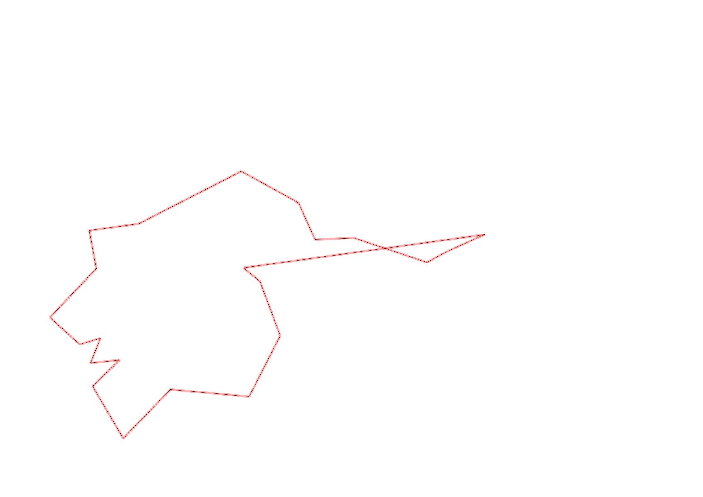

| Control |
Points |
Time Punched |
Distance |
Your Time |
Pace |
Place |
Fastest Time |
Median Time |
% Behind Fastest |
| 127 |
20 |
|
0.06 |
0:00:37 |
10:16 |
17 / 30 |
0:00:01 |
0:00:32 |
3600% |
| 42 |
40 |
|
0.17 |
0:01:33 |
09:07 |
3 / 20 |
0:01:06 |
0:01:52 |
40% |
| 61 |
60 |
|
0.21 |
0:03:16 |
15:33 |
5 / 20 |
0:02:20 |
0:03:34 |
40% |
| 59 |
50 |
|
0.24 |
0:02:07 |
08:49 |
4 / 19 |
0:01:47 |
0:02:30 |
18% |
| 77 |
70 |
|
0.21 |
0:01:54 |
09:02 |
4 / 17 |
0:01:25 |
0:02:33 |
34% |
| 40 |
40 |
|
0.18 |
0:02:09 |
11:56 |
4 / 18 |
0:01:16 |
0:02:38 |
69% |
| 41 |
40 |
|
0.11 |
0:00:42 |
06:21 |
7 / 20 |
0:00:28 |
0:01:07 |
50% |
| 71 |
70 |
|
0.09 |
0:01:23 |
15:22 |
8 / 12 |
0:00:33 |
0:01:12 |
151% |
| 54 |
50 |
|
0.08 |
0:01:00 |
12:30 |
28 / 33 |
0:00:27 |
0:00:45 |
122% |
| 69 |
60 |
|
0.07 |
0:01:11 |
16:54 |
2 / 20 |
0:01:00 |
0:01:56 |
18% |
| 53 |
50 |
|
0.12 |
0:01:43 |
14:18 |
9 / 26 |
0:01:16 |
0:01:51 |
35% |
| 44 |
40 |
|
0.2 |
0:01:34 |
07:50 |
10 / 22 |
0:00:39 |
0:01:40 |
141% |
| 32 |
30 |
|
0.12 |
0:00:55 |
07:38 |
4 / 22 |
0:00:43 |
0:01:19 |
27% |
| 63 |
60 |
|
0.15 |
0:01:23 |
09:13 |
8 / 25 |
0:01:05 |
0:01:29 |
27% |
| 107 |
100 |
|
0.35 |
0:05:34 |
15:54 |
20 / 22 |
0:02:14 |
0:03:49 |
149% |
| 57 |
50 |
|
0.2 |
0:02:23 |
11:55 |
4 / 22 |
0:01:54 |
0:03:53 |
25% |
| 92 |
90 |
|
0.12 |
0:03:08 |
26:06 |
3 / 18 |
0:02:10 |
0:04:22 |
44% |
| 47 |
40 |
|
0.12 |
0:07:27 |
1:02:05 |
14 / 16 |
0:01:07 |
0:04:40 |
567% |
| 48 |
40 |
|
0.23 |
0:02:57 |
12:49 |
2 / 7 |
0:02:14 |
0:03:31 |
32% |
| 64 |
60 |
|
0.07 |
0:00:57 |
13:34 |
6 / 14 |
0:00:38 |
0:01:05 |
50% |
| 49 |
40 |
|
0.12 |
0:02:21 |
19:35 |
9 / 12 |
0:00:55 |
0:01:28 |
156% |
| Finish |
0 |
|
0.73 |
0:13:55 |
19:03 |
2 / 2 |
0:04:39 |
0:09:17 |
199% |
Total Distance Covered: 3.95km
Points Scored: 1100
Late Penalty: -20
Final Score: 1080
Total Time: 1hours 0minutes 9seconds
Efficiency: 273.42 points/km
 
